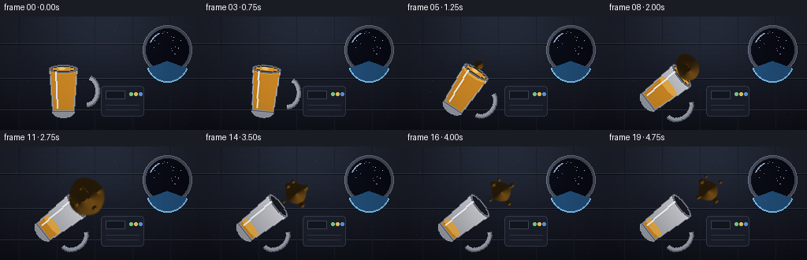
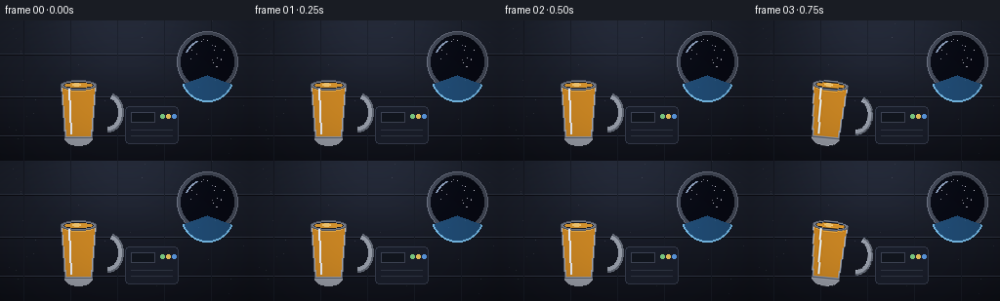

CODING AGENTS AS PIXEL WORLD MODELS
traex/Seed-2.1-Pro-0915 · phygen_002
点击播放 · 原生 RGB 像素
逐轮保存的候选
回放视频、检查图与代码变化。
每份候选均可单独播放。实际图片检查记录在下方工具轨迹中。
候选 01播放与检查图
点击播放 · 原生 RGB 像素


展开代码变化
--- 上一保存版本
+++ 本次保存版本
@@ -0,0 +1,289 @@
+"""Procedural text-to-video generator.
+
+Scene: a cup of oil poured out inside a space station. In zero gravity the
+oil does not fall; it streams from the tilted cup and gathers into a glossy
+floating blob with small satellite droplets.
+
+Pure numpy + PIL: a pre-rendered station background, a rotated vector-drawn
+cup, and a shaded metaball field for the liquid.
+"""
+import json
+from pathlib import Path
+
+import numpy as np
+from PIL import Image, ImageDraw, ImageFilter
+
+import artifact_io
+
+W, H, N, FPS = 256, 144, 20, 4.0
+rng = np.random.default_rng(20261110)
+
+# ---------------------------------------------------------------- background
+def make_background():
+ top = np.array([34, 39, 52], dtype=np.float32)
+ bot = np.array([16, 18, 26], dtype=np.float32)
+ t = np.linspace(0, 1, H, dtype=np.float32)[:, None]
+ bg = top[None, None] * (1 - t[..., None]) + bot[None, None] * t[..., None]
+ img = np.repeat(bg, W, axis=1)
+ im = Image.fromarray(img.astype(np.uint8))
+ d = ImageDraw.Draw(im)
+
+ # Wall panel seams.
+ for y in (34, 78, 118):
+ d.line([(0, y), (W, y)], fill=(48, 54, 68), width=1)
+ d.line([(0, y + 1), (W, y + 1)], fill=(12, 13, 19), width=1)
+ for x in range(24, W, 48):
+ d.line([(x, 0), (x, H)], fill=(24, 28, 38), width=1)
+
+ # Instrument panel, left of the window.
+ d.rounded_rectangle([128, 88, 182, 126], radius=4, fill=(26, 30, 42),
+ outline=(52, 58, 74))
+ d.rectangle([134, 94, 158, 104], fill=(18, 22, 30), outline=(60, 66, 82))
+ for i, c in enumerate(((120, 200, 130), (230, 190, 90), (90, 150, 220))):
+ d.ellipse([164 + i * 6, 96, 168 + i * 6, 100], fill=c)
+ for y in (112, 118):
+ d.line([(134, y), (176, y)], fill=(48, 54, 68), width=1)
+
+ # Porthole with space, stars and an earth limb.
+ wx, wy, wr = 212, 42, 27
+ d.ellipse([wx - wr - 4, wy - wr - 4, wx + wr + 4, wy + wr + 4],
+ fill=(70, 76, 90), outline=(110, 116, 132))
+ d.ellipse([wx - wr, wy - wr, wx + wr, wy + wr], fill=(8, 10, 20))
+ stars = rng.uniform(-wr + 4, wr - 4, size=(26, 2))
+ for sx, sy in stars:
+ if sx * sx + sy * sy < (wr - 3) ** 2 and sy < 6:
+ b = int(rng.integers(120, 230))
+ d.point((wx + sx, wy + sy), fill=(b, b, min(255, b + 12)))
+ d.pieslice([wx - wr, wy - wr + 14, wx + wr, wy + wr + 14], 20, 160,
+ fill=(34, 78, 120))
+ d.arc([wx - wr, wy - wr + 14, wx + wr, wy + wr + 14], 20, 160,
+ fill=(120, 190, 235), width=2)
+ d.arc([wx - wr + 3, wy - wr + 3, wx + wr - 3, wy + wr - 3], 205, 245,
+ fill=(150, 170, 200), width=2)
+
+ # Overhead light wash and floating dust motes.
+ wash = Image.new("L", (W, H), 0)
+ wd = ImageDraw.Draw(wash)
+ wd.ellipse([60, -60, 200, 60], fill=70)
+ wash = wash.filter(ImageFilter.GaussianBlur(28))
+ glow = np.array(Image.new("RGB", (W, H), (90, 105, 140)), dtype=np.float32)
+ arr = np.asarray(im).astype(np.float32)
+ arr += glow * (np.asarray(wash, dtype=np.float32) / 255.0)[..., None] * 0.35
+ for _ in range(28):
+ x, y = rng.integers(0, W), rng.integers(0, H)
+ arr[y, x] += rng.integers(10, 30)
+ return np.clip(arr, 0, 255).astype(np.uint8)
+
+# ---------------------------------------------------------------------- cup
+ANCHOR = np.array([80.0, 88.0]) # rotation centre of the cup in world coords
+MOUTH_LOCAL = np.array([0.0, -30.0]) # mouth centre relative to anchor
+
+def tilt_angle(t):
+ """Visual clockwise tilt (radians) over time in frames."""
+ if t < 2.0:
+ return 0.0
+ a = min(1.0, (t - 2.0) / 5.0)
+ a = a * a * (3 - 2 * a) # smoothstep
+ return np.deg2rad(52.0) * a
+
+def oil_level(t):
+ """Fraction of the cup still filled with oil."""
+ if t < 4.5:
+ return 1.0
+ return float(np.clip(1.0 - (t - 4.5) / 8.0, 0.05, 1.0))
+
+def rot_cw(p, angle):
+ c, s = np.cos(angle), np.sin(angle)
+ return np.array([p[0] * c - p[1] * s, p[0] * s + p[1] * c])
+
+def rim_world(t):
+ return ANCHOR + rot_cw(MOUTH_LOCAL, tilt_angle(t))
+
+def make_cup(t):
+ S = 104
+ layer = Image.new("RGBA", (S, S), (0, 0, 0, 0))
+ d = ImageDraw.Draw(layer)
+ cx = S // 2
+ top_w, bot_w, top_y, bot_y = 36, 28, 30, 84
+
+ # Handle behind the body.
+ d.arc([cx + 14, top_y + 8, cx + 46, bot_y - 6], -70, 90,
+ fill=(150, 156, 168), width=6)
+ d.arc([cx + 14, top_y + 8, cx + 46, bot_y - 6], -70, 90,
+ fill=(96, 102, 114), width=2)
+
+ # Body with vertical metallic gradient.
+ body = [(cx - top_w // 2, top_y), (cx + top_w // 2, top_y),
+ (cx + bot_w // 2, bot_y), (cx - bot_w // 2, bot_y)]
+ mask = Image.new("L", (S, S), 0)
+ ImageDraw.Draw(mask).polygon(body, fill=255)
+ grad = np.linspace(205, 140, S, dtype=np.uint8)[:, None].repeat(S, 1)
+ metal = np.stack([grad + 8, grad + 10, grad + 16], axis=-1).astype(np.uint8)
+ layer.paste(Image.fromarray(metal), (0, 0), mask)
+ d.ellipse([cx - bot_w // 2, bot_y - 8, cx + bot_w // 2, bot_y + 8],
+ fill=(150, 154, 164))
+ d.line(body + [body[0]], fill=(90, 96, 108), width=1)
+
+ # Oil inside the cup, clipped to the body.
+ lvl = oil_level(t)
+ oil_top = int(bot_y - 6 - (bot_y - top_y - 8) * lvl)
+ oil = Image.new("RGBA", (S, S), (0, 0, 0, 0))
+ od = ImageDraw.Draw(oil)
+ od.rectangle([cx - top_w // 2 + 2, oil_top, cx + top_w // 2 - 2, bot_y],
+ fill=(202, 134, 36, 255))
+ od.ellipse([cx - top_w // 2 + 2, oil_top - 4, cx + top_w // 2 - 2,
+ oil_top + 4], fill=(226, 168, 70, 255))
+ inner_mask = Image.new("L", (S, S), 0)
+ ImageDraw.Draw(inner_mask).polygon(
+ [(cx - top_w // 2 + 2, top_y + 3), (cx + top_w // 2 - 2, top_y + 3),
+ (cx + bot_w // 2 - 2, bot_y - 2), (cx - bot_w // 2 + 2, bot_y - 2)],
+ fill=255)
+ layer = Image.alpha_composite(layer, Image.composite(oil, layer, inner_mask))
+ d = ImageDraw.Draw(layer)
+
+ # Rim: metal ring with dark interior and oil surface.
+ d.ellipse([cx - top_w // 2, top_y - 5, cx + top_w // 2, top_y + 5],
+ fill=(118, 124, 136), outline=(80, 86, 98))
+ d.ellipse([cx - top_w // 2 + 3, top_y - 3, cx + top_w // 2 - 3, top_y + 3],
+ fill=(24, 26, 32))
+ if lvl > 0.12:
+ d.ellipse([cx - top_w // 2 + 4, top_y - 2, cx + top_w // 2 - 4,
+ top_y + 2], fill=(214, 148, 46))
+ d.ellipse([cx - 6, top_y - 2, cx + 2, top_y + 1],
+ fill=(240, 196, 110))
+ d.line([(cx - 10, top_y + 4), (cx - 8, bot_y - 4)],
+ fill=(235, 238, 245), width=2)
+
+ angle = -np.rad2deg(tilt_angle(t)) # PIL rotate is visually CCW
+ rotated = layer.rotate(angle, resample=Image.BICUBIC, center=(cx, cx))
+ out = Image.new("RGBA", (W, H), (0, 0, 0, 0))
+ out.paste(rotated, (int(ANCHOR[0] - cx), int(ANCHOR[1] - cx)), rotated)
+ return out
+
+# ------------------------------------------------------------- oil metaballs
+def ball_centers(t):
+ """Return arrays of metaball centres and radii for frame t."""
+ centers, radii = [], []
+ t0, t1 = 4.6, 12.4
+
+ # Continuous stream of beads emitted from the moving rim.
+ if t0 <= t <= t1 + 0.6:
+ e = t0
+ while e <= min(t, t1):
+ rim = rim_world(e)
+ a = tilt_angle(e)
+ vel = np.array([np.sin(a), -np.cos(a)]) * 2.1 + np.array([0.55, 0.05])
+ wob = np.array([np.cos(a), np.sin(a)]) * (0.9 * np.sin(e * 2.1))
+ centers.append(rim + vel * (t - e) + wob)
+ radii.append(3.4 + 0.5 * np.sin(e * 1.7))
+ e += 0.22
+
+ # Main blob: grows as the stream feeds it, then wobbles in free float.
+ if t >= 6.0:
+ grow = np.clip((t - 6.0) / 6.0, 0, 1)
+ r = 11.5 * grow
+ if t > 12.0:
+ r = 11.5 + 0.9 * np.sin((t - 12.0) * 1.4)
+ ref = rim_world(7.0)
+ a7 = tilt_angle(7.0)
+ vel = np.array([np.sin(a7), -np.cos(a7)]) * 2.1 + np.array([0.55, 0.05])
+ c = ref + vel * (t - 7.0)
+ c[1] += 1.6 * np.sin((t - 6.0) * 0.55)
+ centers.append(c)
+ radii.append(max(r, 0.6))
+
+ # Satellite droplets pinching off around the main blob.
+ drops = [
+ (8.5, (-13, -12), (0.42, 0.10), 2.4),
+ (9.5, (12, -9), (0.30, -0.14), 2.0),
+ (10.2, (-16, 8), (0.22, 0.18), 1.7),
+ (11.0, (8, 13), (0.18, 0.12), 2.2),
+ (11.6, (-4, -17), (0.12, -0.10), 1.5),
+ ]
+ if t >= 6.0:
+ ref = rim_world(7.0)
+ a7 = tilt_angle(7.0)
+ vel = np.array([np.sin(a7), -np.cos(a7)]) * 2.1 + np.array([0.55, 0.05])
+ bc = ref + vel * (t - 7.0)
+ for spawn, off, vd, r in drops:
+ if t >= spawn:
+ age = t - spawn
+ p = bc + np.array(off) + np.array(vd) * age
+ p[0] += 0.8 * np.sin(age * 1.9 + spawn)
+ centers.append(p)
+ radii.append(r * (1.0 - 0.12 * np.exp(-age) * np.cos(age * 3)))
+ return (np.asarray(centers, dtype=np.float64),
+ np.asarray(radii, dtype=np.float64))
+
+def render_oil(bg, t):
+ centers, radii = ball_centers(t)
+ if len(centers) == 0:
+ return bg
+ xs = np.arange(W, dtype=np.float64)[None, :]
+ ys = np.arange(H, dtype=np.float64)[:, None]
+ field = np.zeros((H, W), dtype=np.float64)
+ for (cx, cy), r in zip(centers, radii):
+ d2 = (xs - cx) ** 2 + (ys - cy) ** 2
+ field += (r * r) / (d2 + 0.6)
+
+ mask = field > 0.82
+ if not mask.any():
+ return bg
+ gy, gx = np.gradient(field)
+ gmag = np.hypot(gx, gy) + 1e-6
+ nx, ny = gx / gmag, gy / gmag
+ nz = np.sqrt(np.clip(1.0 - nx * nx - ny * ny, 0, 1))
+
+ L = np.array([-0.45, -0.55, 0.70])
+ L /= np.linalg.norm(L)
+ Hv = L + np.array([0.0, 0.0, 1.0])
+ Hv /= np.linalg.norm(Hv)
+ ndl = np.clip(nx * L[0] + ny * L[1] + nz * L[2], 0, 1)
+ ndh = np.clip(nx * Hv[0] + ny * Hv[1] + nz * Hv[2], 0, 1)
+ spec = ndh ** 26
+ fresnel = (1 - nz) ** 2
+
+ base = np.array([198, 130, 34], dtype=np.float64)
+ light_amber = np.array([236, 182, 86], dtype=np.float64)
+ shade = 0.42 + 0.55 * ndl
+ oil = base[None, None] * shade[..., None]
+ oil += light_amber[None, None] * (nz ** 2)[..., None] * 0.35
+ oil -= np.array([46, 30, 8])[None, None] * fresnel[..., None]
+ oil += np.array([255, 246, 222])[None, None] * (spec * 0.92)[..., None]
+ oil = np.clip(oil, 0, 255)
+
+ alpha = np.clip((field - 0.82) / 0.22, 0, 1) * 0.94
+ alpha[~mask] = 0.0
+ out = bg.astype(np.float64) * (1 - alpha[..., None]) + oil * alpha[..., None]
+ return np.clip(out, 0, 255).astype(np.uint8)
+
+# -------------------------------------------------------------------- driver
+def main():
+ case_dir = Path(__file__).parent
+ spec = json.loads((case_dir / "task_spec.json").read_text())
+ n, w, h = spec["frames"], spec["width"], spec["height"]
+ assert (w, h, n) == (W, H, N)
+
+ background = make_background()
+ frames = []
+ for i in range(n):
+ t = float(i)
+ frame = Image.fromarray(background).convert("RGBA")
+ frame.alpha_composite(make_cup(t))
+ composed = np.asarray(frame.convert("RGB"))
+ composed = render_oil(composed, t)
+
+ # Gentle vignette to seat the scene in the cabin.
+ yy, xx = np.mgrid[0:H, 0:W]
+ vig = np.clip(1.0 - (((xx - W / 2) / (W * 0.72)) ** 2
+ + ((yy - H / 2) / (H * 0.85)) ** 2) * 0.35,
+ 0.55, 1.0)
+ composed = np.clip(composed.astype(np.float32) * vig[..., None],
+ 0, 255).astype(np.uint8)
+ frames.append(composed)
+
+ artifact_io.save(np.asarray(frames, dtype=np.uint8), case_dir)
+ print(f"Saved {n} frames {w}x{h} to {case_dir}")
+
+if __name__ == "__main__":
+ main()
可观测工具轨迹
实际执行的命令与返回图片。
命令 1exit 0
/bin/bash -lc 'cat prompt.txt GENERATION_RULES.md task_spec.json; ls -la'
命令 2exit 0
/bin/bash -lc 'cat artifact_io.py'
命令 3exit 0
/bin/bash -lc 'cd . && python generate.py && ls -la'
视觉工具实际返回图片 1

保存候选 1 份；完成命令 3 次；可验证图片返回 1 张。原始 API 响应与完整日志保留在本地。